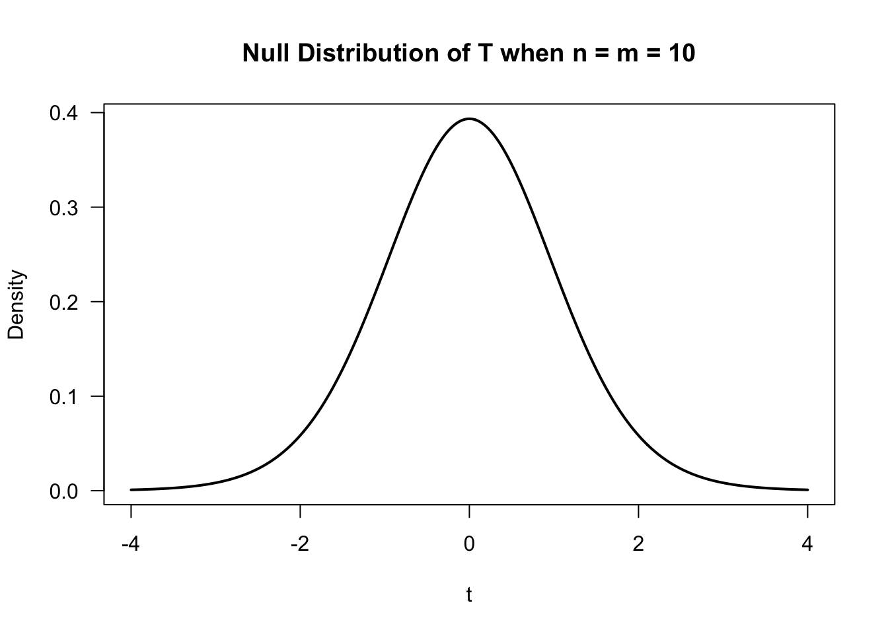
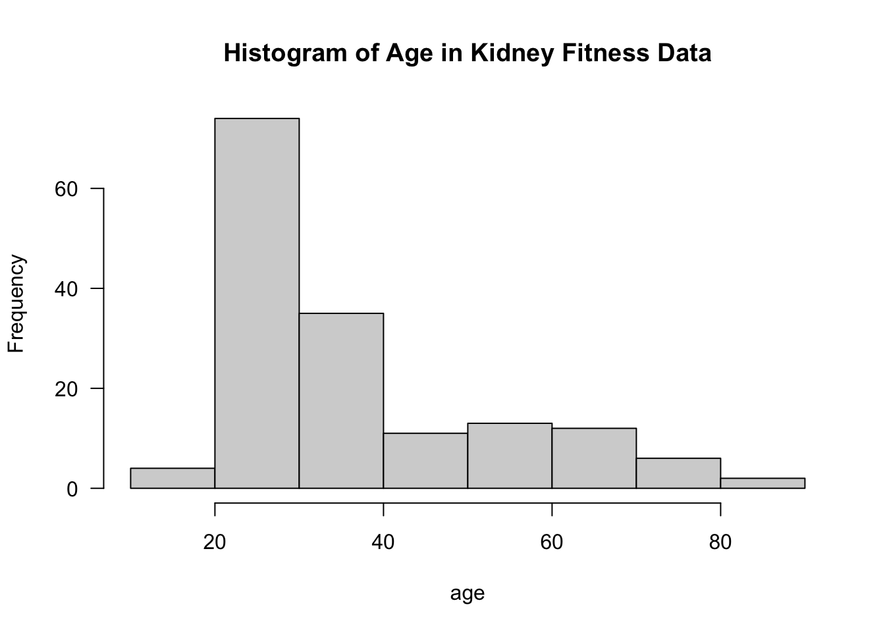

Chapter 1 Introduction
1.1 What is Nonparametric Statistics?
What is Parametric Statistics?
Parametric models refer to probability distributions that can be fully described by a fixed number of parameters that do not change with the sample size.
- Typical examples include
- Gaussian
- Poisson
- Exponential
- Beta
Could also refer to a regression setting where the mean function is described by a fixed number of parameters.
What is Nonparametric Statistics?
It is difficult to give a concise, all-encompassing definition, but nonparametric statistics generally refers to statistical methods where there is not a clear parametric component.
A more practical definition is that nonparametric statistics refers to flexible statistical procedures where very few assumptions are made regarding the distribution of the data or the form of a regression model.
The uses of nonparametric methods in several common statistical contexts are described in Sections 1.3 - 1.7.
1.2 Outline of Course
This course is roughly divided into the following 5 categories.
- Nonparametric Testing
- Rank-based Tests
- Permutation Tests
- Estimation of Basic Nonparametric Quantities
- The Empirical Distribution Function
- Density Estimation
- Nonparametric Confidence Intervals
- Bootstrap
- Jacknife
- Nonparametric Regression Part I (Smoothing Methods)
- Kernel Methods
- Splines
- Local Regression
- Nonparametric Regression Part II (Machine Learning Methods)
- Decision Trees/CART
- Ensemble Methods
1.3 Example 1: Nonparametric vs. Parametric Two-Sample Testing
Suppose we have data from two groups. For example, outcomes from two different treatments.
Group 1 outcomes: \(X_{1}, \ldots, X_{n}\) an i.i.d (independent and identically distributed) sample from distribution function \(F_{X}\). This means that \[\begin{equation} F_{X}(t) = P( X_{i} \leq t) \quad \textrm{ for any } 1 \leq i \leq n \nonumber \end{equation}\]
Group 2 outcomes: \(Y_{1}, \ldots, Y_{m}\) an i.i.d. sample from distribution function \(F_{Y}\). \[\begin{equation} F_{Y}(t) = P( Y_{i} \leq t) \quad \textrm{ for any } 1 \leq i \leq n \nonumber \end{equation}\]
To test the impact of a new treatment, we usually want to test whether or not \(F_{X}\) differs from \(F_{Y}\) in some way. This can be stated in hypothesis testing language as \[\begin{eqnarray} H_{0}&:& F_{X} = F_{Y} \quad \textrm{( populations are the same)} \nonumber \\ H_{A}&:& F_{X} \neq F_{Y} \quad \textrm{( populations are different)} \tag{1.1} \end{eqnarray}\]
Parametric Tests
Perhaps the most common parametric test for (1.1) is the t-test. The t-test assumes that \[\begin{equation} F_{X} = \textrm{Normal}(\mu_{x}, \sigma^{2}) \quad \textrm{ and } \quad F_{Y} = \textrm{Normal}(\mu_{y}, \sigma^{2}) \end{equation}\]
Under this parametric assumption, the hypothesis test (1.1) reduces to \[\begin{equation} H_{0}: \mu_{x} = \mu_{y} \quad \textrm{ vs. } \quad H_{A}: \mu_{x} \neq \mu_{y} \end{equation}\]
The standard t-statistic (with a pooled estimate of \(\sigma^{2}\)) is the following \[\begin{equation} T = \frac{\bar{X} - \bar{Y}}{ s_{p}\sqrt{\frac{1}{n} + \frac{1}{m}} }, \end{equation}\] where \(\bar{X} = \frac{1}{n}\sum_{i=1}^{n} X_{i}\) and \(\bar{Y} = \frac{1}{m}\sum_{i=1}^{m} Y_{i}\) are the group-specific sample means and \(s_{p}^{2}\) is the pooled estimate of \(\sigma^{2}\) \[\begin{equation} s_{p}^{2} = \frac{1}{m + n - 2}\Big\{ \sum_{i=1}^{n} (X_{i} - \bar{X})^{2} + \sum_{i=1}^{m} (Y_{i} - \bar{Y})^{2} \Big\} \end{equation}\]
The t-test is based on the null distribution of \(T\) - the distribution of \(T\) under the null hypothesis.
Under the assumption of normality, the null distribution of \(T\) is a t distribution with \(n + m - 2\) degrees of freedom.
Notice that the null distribution of \(T\) depends on the parametric assumption that both \(F_{X} = \textrm{Normal}(\mu_{x}, \sigma^{2})\) and \(F_{Y} = \textrm{Normal}(\mu_{y}, \sigma^{2})\). (Mention CLT argument here)
In addition to using the assumption that \(F_{X} = \textrm{Normal}(\mu_{x}, \sigma^{2})\) and \(F_{Y} = \textrm{Normal}(\mu_{y}, \sigma^{2})\), we used this parametric assumption in the formulation of the hypothesis test itself because we assumed that any difference between \(F_{X}\) and \(F_{Y}\) would be fully described by difference in \(\mu_{x}\) and \(\mu_{y}\).
Nonparametric Tests
Two-sample nonparametric tests are meant to be “distribution-free”. This means the null distribution of the test statistic does not depend on any parametric assumptions about the two populations \(F_{X}\) and \(F_{Y}\).
Also, the hypotheses tests themselves do not rely on any parametric assumptions.
For example,
1.4 Example 2: Nonparametric Estimation
Suppose we have \(n\) observations \((X_{1}, \ldots, X_{n})\) which are assumed to be i.i.d. (independent and identically distributed). The distribution function of \(X_{i}\) is \(F_{X}\).
Suppose we are interested in estimating the entire distribution function \(F_{X}\) rather than specific features of the distribution of \(X_{i}\) such as the mean or standard deviation.
- In a parametric approach to estimating \(F_{X}\), we would assume the distribution of \(X_{i}\) belongs to some parametric family of distributions.
For example,
- \(X_{i} \sim \textrm{Normal}(\mu, \sigma^{2})\)
- \(X_{i} \sim \textrm{Exponential}(\lambda)\)
- \(X_{i} \sim \textrm{Beta}(\alpha, \beta)\)
If we assume that \(X_{i} \sim \textrm{Normal}( \mu, \sigma^{2} )\), we only need to estimate 2 parameters to fully describe the distribution of \(X_{i}\), and the number of parameters will not depend on the sample size.
1.5 Example 3: Confidence Intervals
Inference for a wide range of statistical procedures is based on the following argument \[\begin{equation} \hat{\theta}_{n} \textrm{ has an approximate Normal}\Big( \theta, \widehat{\textrm{Var}(\hat{\theta}_{n})} \Big) \textrm{ distribution } \tag{1.2} \end{equation}\]
Above, \(\hat{\theta}_{n}\) is an estimate of a parameter \(\theta\), and \(\widehat{\textrm{Var}(\hat{\theta}_{n})}\) is an estimate of the variance of \(\hat{\theta}_{n}\).
\(se_{n} = \sqrt{\widehat{\textrm{Var}(\hat{\theta}_{n})}}\) is usually referred to as the standard error.
\(95\%\) confidence intervals are reported using the following formula \[\begin{equation} [\hat{\theta}_{n} - 1.96 se_{n}, \hat{\theta}_{n} + 1.96 se_{n} ] \end{equation}\]
Common examples of this include + \(\hat{\theta}_{n} = \bar{X}_{n}\). In this case, appeals to the Central Limit Theorem would justify approximation (1.2). The variance of \(\hat{\theta}_{n}\) would be \(\sigma^{2}\), and the standard error would typically be \(se_{n} = \hat{\sigma}/\sqrt{n}\). + \(\hat{\theta}_{n} = \textrm{Maximum Likelihood Estimate of } \theta\). In this case, asymptotics would justify the approximate distribution \(\hat{\theta}_{n} \sim \textrm{Normal}(\theta, \frac{1}{nI(\theta)} )\), where \(I(\theta)\) denotes the Fisher information. The standard error in this context is often \(se_{n} = 1/\sqrt{n I(\hat{\theta}_{n})}\).
Confidence intervals using (1.2) rely on a parametric approximation to the sampling distribution of the statistic \(\hat{\theta}_{n}\).
Moreover, even if one wanted to use something like (1.2), working out standard error formulas can be a great challenge in more complicated situations.
The bootstrap is a simulation-based approach for computing standard errors and confidence intervals.
The bootstrap does not rely on any particular parametric assumptions and can be applied in almost any context.
1.6 Example 4: Nonparametric Regression with a Single Covariate
Regression is a common way of modeling the relationship between two different variables.
Suppose we have \(n\) pairs of observations \((y_{1}, x_{1}), \ldots, (y_{n}, x_{n})\) where \(y_{i}\) and \(x_{i}\) are suspected to have some association.
Linear regression would assume that these \(y_{i}\) and \(x_{i}\) are related by the following \[\begin{equation} y_{i} = \beta_{0} + \beta_{1}x_{i} + \varepsilon_{i} \end{equation}\] with the assumption \(\varepsilon_{i} \sim \textrm{Normal}(0, \sigma^{2})\) often made.
In this model, there are only 3 parameters: \((\beta_{0}, \beta_{1}, \sigma^{2})\), and the number of parameters stays fixed for all \(n\).

The nonparametric counterpart to linear regression is usually formulated in the following way \[\begin{equation} y_{i} = m( x_{i} ) + \varepsilon_{i} \end{equation}\]
Typically, one makes very few assumptions about the form of the mean function \(m\), and it is not assumed \(m\) can be described by a finite number of parameters.
There are a large number of nonparametric methods for estimating \(m\).
One popular method is the use of smoothing splines.
With smoothing splines, one considers mean functions of the form \[\begin{equation} m(x) = \sum_{j=1}^{n} \beta_{j}g_{j}(x) \tag{1.3} \end{equation}\] where \(g_{1}, \ldots, g_{n}(x)\) are a collection of spline basis functions.
Because of the large number of parameters in (1.3), one should estimate the basis function weights \(\beta_{j}\) through penalized regression \[\begin{equation} \textrm{minimize} \quad \sum_{i=1}^{n} \Big( y_{i} - \sum_{j=1}^{n} \beta_{j}g_{j}( x_{i} ) \Big)^{2} + \lambda \sum_{i=1}^{n}\sum_{j=1}^{n} \Omega_{ij}\beta_{i}\beta_{j} \tag{1.4} \end{equation}\] where \(\Omega_{ij} = \int g_{i}''(t)g_{j}''(t) dt\).
Using coefficient estimates \(\hat{\beta}_{1}, \ldots, \hat{\beta}_{n}\) found from solving (1.3), the nonparametric estimate of the mean function is defined as \[\begin{equation} \hat{m}(x) = \sum_{j=1}^{n} \hat{\beta}_{j}g_{j}(x) \end{equation}\]
While the estimation in (1.4) resembles parametric estimation for linear regression, notice that the number of parameters to be estimated will change with the sample size.
Allowing the number of basis functions to grow with \(n\) is important. For a sufficiently large number of basis functions, one should be able to approximate the true mean function \(m(x)\) arbitrarily closely.
